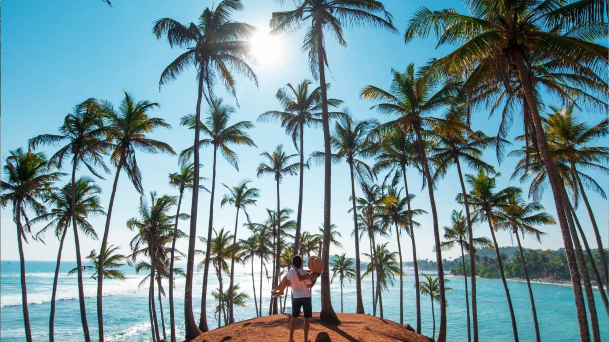

Wander through centuries of history inside towering stone ramparts, cruise deep blue waters in search of the ocean's gentle giants, and feel the raw pulse of the wild in the island's premier nature sanctuaries. Southern Sunsets is a curated 7-day coastal journey tracing the vibrant and sun-drenched southern edge of Sri Lanka.
Beginning in the historic, UNESCO-listed Galle Fort, you will traverse living history along cobblestone pathways and watch the sky catch fire over the Indian Ocean from ancient ramparts. Transitioning down the coastline, the journey brings you to the golden sands of Mirissa, the perfect launchpad for whale watching safaris and relaxed palm-fringed afternoons. Finally, venture into the rugged scrublands of Yala National Park for a thrilling close encounter with leopards, elephants, and abundant birdlife before winding down on wild, untouched beaches.
Day-by-Day Plan

Day 1-2: Colonial Charm & Fortified Streets - Galle Fort
Arrive in Colombo and travel down the scenic southern coast to Galle. Spend two days exploring the cobblestone streets of the UNESCO-listed Galle Fort, visiting the historic lighthouse, and walking the ancient ramparts at sunset. Discover colonial architecture, chic boutique cafes, and local art galleries tucked away in the narrow streets.

Day 3-4: Marine Wonders & Coconut Palms - Mirissa
Drive east along the coast to Mirissa, a beautiful crescent-shaped bay. Wake up early for an unforgettable ocean safari to witness blue whales and dolphins in their natural habitat. Spend your afternoons walking up the iconic Coconut Tree Hill, swimming in the turquoise waters of Secret Beach, and enjoying fresh seafood by the shore.

Day 5-7: Wild Safaris & Unspoiled Shores - Yala National Park
Travel further east to the edge of Yala National Park, famous for having one of the highest leopard densities in the world. Embark on a thrilling afternoon jeep safari to spot leopards, elephants, sloth bears, and crocodiles. Spend your final day relaxing on the wild beach or enjoying a quiet walk before returning to Colombo for departure.
Curated Luxury Stays
We select hotels that reflect the heritage and environment of their location, focusing on architectural elegance and serene environments.